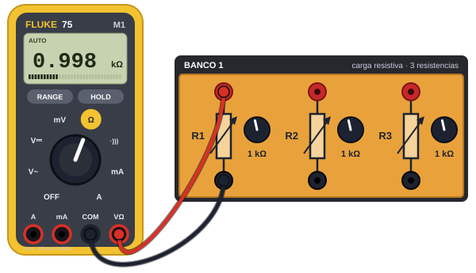

¡Hey! Practica acá, te ayudará
6 circuitos de la Ley de Ohm, de fácil a difícil, con el Fluke 75 y los bancos de resistencias. Llega al laboratorio sabiendo medir.

1. Guía del laboratorio
Ley de Ohm, resistencias y capacitores Mediciones con multímetro, asociaciones serie y paralelo, y montaje soldado.
- Duración2 horas + preparación previa
- Grupo3 o más con roles rotativos
- NivelBásico primera práctica
- Puntos50 en total
- Fuente DC: límite de corriente en 15 mA y nunca más de 10 V en la ley de Ohm.
- Multímetro: la entrada de mA va siempre en serie. En paralelo con la fuente se funde el fusible.
- Capacitores: tensión nominal de 16 V o más, máximo 6,5 V de pico, y descárgalos con una resistencia de 1 kΩ entre mediciones.
- Soldador: gafas puestas, siempre en su soporte y con ventilación.
Objetivos
- Medir resistencias con el óhmetro y verificar la ley de Ohm en una resistencia de 1 kΩ, sin pasar su límite de potencia.
- Calcular y medir la resistencia equivalente de montajes en serie, paralelo y mixto, y expresar la diferencia como error porcentual.
- Medir la capacitancia de cada capacitor y la equivalente en serie y en paralelo con el capacímetro.
- Medir con una señal de 1 kHz cómo se reparte la tensión en capacitores en serie y en paralelo, y explicarlo con las reactancias.
- Soldar un circuito de resistencias sobre baquelita perforada, con uniones limpias, y comprobar su resistencia equivalente.
- Aplicar las normas de seguridad al usar la fuente, el generador, el soldador y los capacitores.
Materiales y equipos
- Multímetro digital Fluke 179 o equivalente (VDC, VAC true RMS, mA DC, Ω y capacitancia)
- Fuente DC regulada de 0 a 30 V con límite de corriente
- Generador de funciones: senoidal de 1 kHz, con salida Hi-Z / 50 Ω
- Resistencias de 1/4 W y 5 %: 220 Ω (RA), 470 Ω (RB), 1 kΩ (RC), 2,2 kΩ (RD) y 4,7 kΩ (RE)
- Capacitores electrolíticos bipolares de 16 V o más: C1 = 100 µF, C2 = 220 µF y C3 = 3,3 µF
- Módulo de resistencias del laboratorio (posiciones 1 a 6, con R1, R2 y R3)
- Protoboard, cables, caimanes y cable BNC–caimán
- Baquelita perforada de 5 × 7 cm
- Equipo de soldadura: soldador de 25 a 40 W con soporte, estaño con flux, esponja, alicate y cortafrío
- Gafas de seguridad, una por persona
Actividades y puntos
| Actividad | Qué se hace | Puntos |
|---|---|---|
| 1 | Preguntas previas y cálculos (antes del laboratorio) | 4 |
| 2 | Medir las resistencias del módulo | 3 |
| 3 | Serie y paralelo en el módulo | 4 |
| 4 | Ley de Ohm: V–I, gráfica, pendiente y potencia en esta página | 8 |
| 6 | Resistencias en serie | 5 |
| 7 | Resistencias en paralelo | 5 |
| 8 | Circuito mixto soldado en baquelita | 5 |
| 9 | Capacitores en serie con señal de 1 kHz | 8 |
| 10 | Capacitores en paralelo | 5 |
| 11 | Conclusiones con datos | 3 |
| Total | 50 | |
La Actividad 5 se hace en la Práctica II. Las secciones 3 a 6 de esta página te acompañan en la Actividad 4.
2. Video de montaje
3. Pre-verificación
Antes de encender la fuente, escribe los valores de tu montaje.
4. Montaje
Antes de energizar la fuente, revisa cada punto y pide el visto bueno al docente (es la lista de verificación de la Actividad 4 de la guía):
5. Mediciones
Varía el voltaje de la fuente y anota la corriente que marca el multímetro. La página la compara con la corriente teórica, usando la resistencia de la pre-verificación.
| Fuente (V) | Medida (mA) | Teórica (mA) | Error |
|---|---|---|---|
| 2 | — | — | |
| 4 | — | — | |
| 6 | — | — | |
| 8 | — | — | |
| 10 | — | — |
¿Algo no cuadra? Errores comunes
El multímetro marca 0 o no marca nada
El circuito está abierto: revisa que cada cable y el resistor estén bien insertados y que sus patas no queden en filas distintas de la protoboard. Confirma que la salida de la fuente esté encendida. Si el amperímetro se conectó en paralelo por error, su fusible pudo quemarse.
La lectura sale negativa
El amperímetro está al revés. La corriente debe entrar por la punta roja, que va del lado del positivo de la fuente.
La corriente es mucho mayor que la esperada
Lo más común es un resistor equivocado: 1 kΩ es café-negro-rojo, mientras que café-negro-café es 100 Ω. También puede haber un corto entre filas de la protoboard.
La corriente es menor que la esperada
Revisa el valor del resistor y que los cables hagan buen contacto. Mide con el voltímetro el voltaje real de la fuente: a veces no es el que muestra la perilla.
El valor cambia o salta
Hay un mal contacto: presiona los componentes en la protoboard y revisa que las puntas del multímetro estén firmes.
La fuente pita o se enciende la luz de límite (CC)
La fuente está limitando la corriente: puede haber un cortocircuito. Apágala y revisa el montaje antes de volver a encender.
El resistor se calienta
Está disipando demasiada potencia. Apaga la fuente y revisa la pre-verificación: baja el voltaje o usa un resistor de mayor valor.
6. Comparación
Escribe la resistencia en la pre-verificación y al menos dos mediciones para ver la comparación.
7. Enviar resultados
Cuando termines, envía tus resultados al registro del proyecto de grado. Solo se envía el código de grupo, nunca nombres.
¿El circuito funcionó a la primera, sin tener que corregir conexiones?